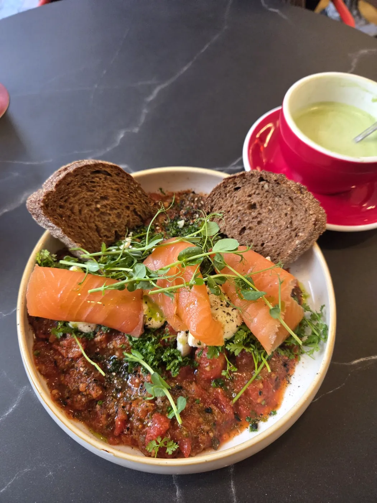
Meest genoemdShakshuka
Eitjes in een pittige tomatensaus, met donker brood om alles mee op te vegen.
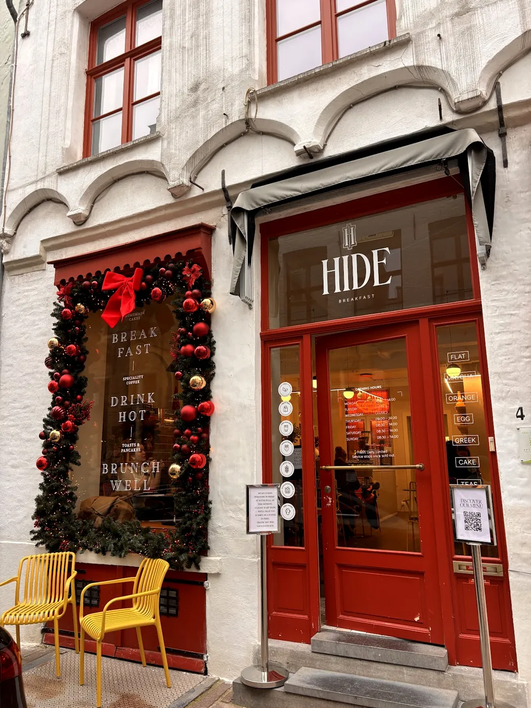
Een rustig adres in de Cordoeaniersstraat, een halve minuut van de Markt. Eggs benedict, shakshuka, zalm op zuurdesem en koffie in onze rode kopjes. Reserveren hoeft niet, je wandelt gewoon binnen.
Ontbijt en lunch, de hele dag door tot sluitingstijd. Dit zijn de borden die gasten het vaakst bij naam noemen in hun reviews.

Meest genoemdEitjes in een pittige tomatensaus, met donker brood om alles mee op te vegen.
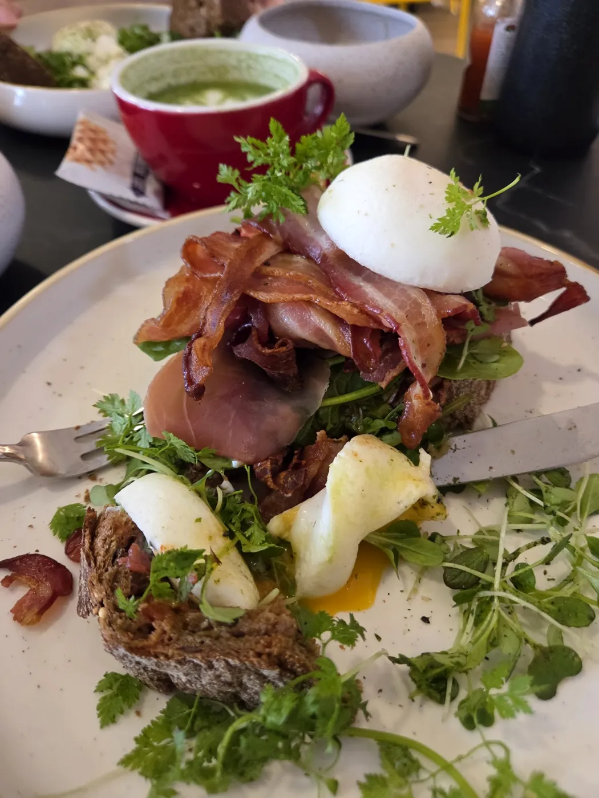
BrunchGepocheerde eieren met hollandaise. Ook met wilde paddenstoelen, voor wie geen vlees eet.
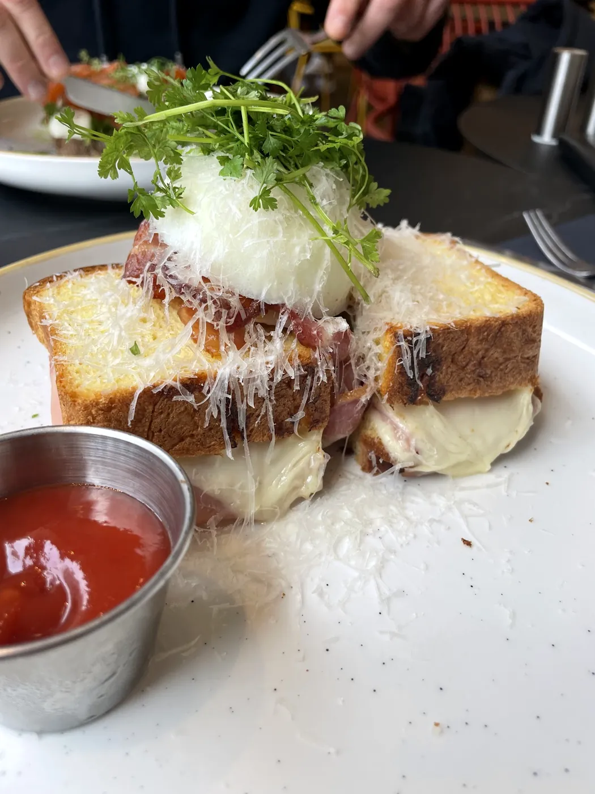
BriocheOp dikke brioche, goudbruin gebakken, met gesmolten kaas die er langs alle kanten uitloopt.
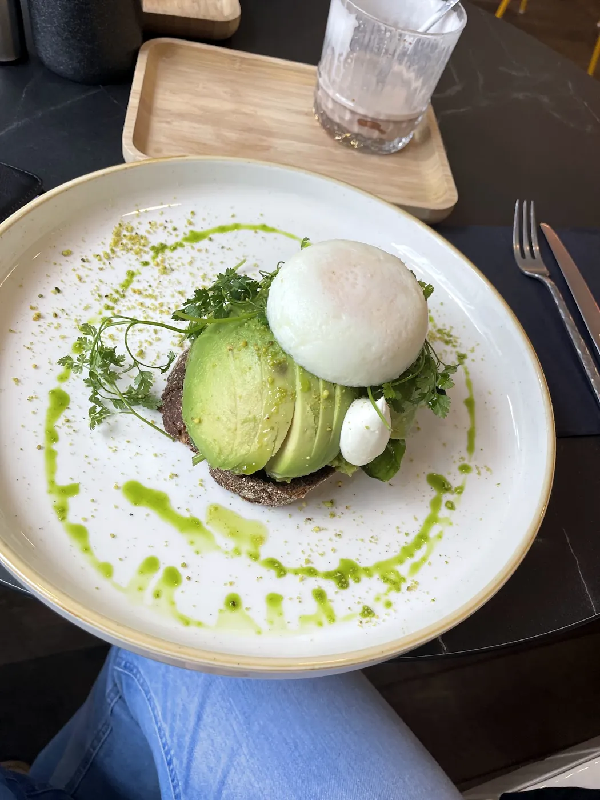
VeggieRomige avocado op geroosterd brood, met een gepocheerd eitje erbovenop.
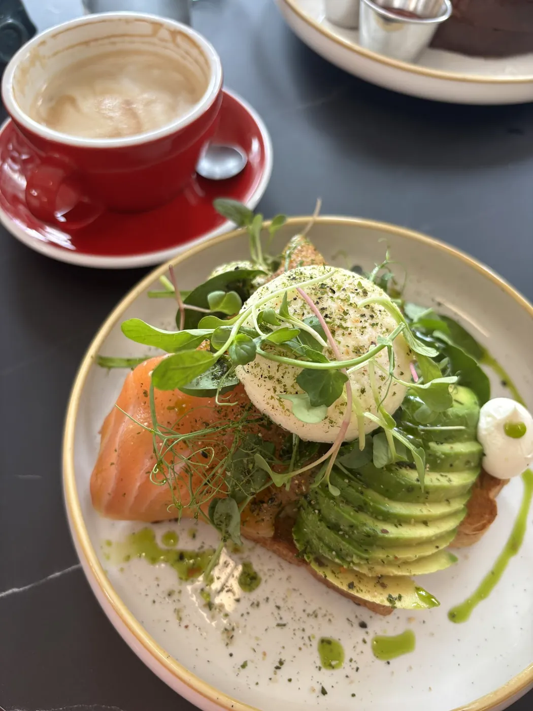
ZalmGerookte zalm, avocado en ei op toast. Een bord waar je even stil van wordt.
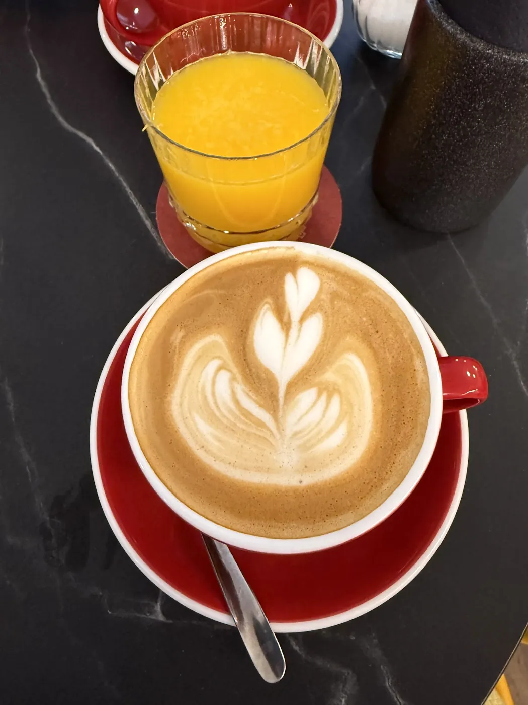
ErbijHet vaste duo naast elk ontbijt: koffie in de rode kop en een glas versgeperst sap.
Of met een cortado, een cappuccino of een flat white. Elke kop komt in de rode kopjes die je van onze foto's kent, met latte art erop.
Thee drink je hier los getrokken, in een glazen pot op een houten plankje. Rustig, zoals een ontbijt hoort te zijn.
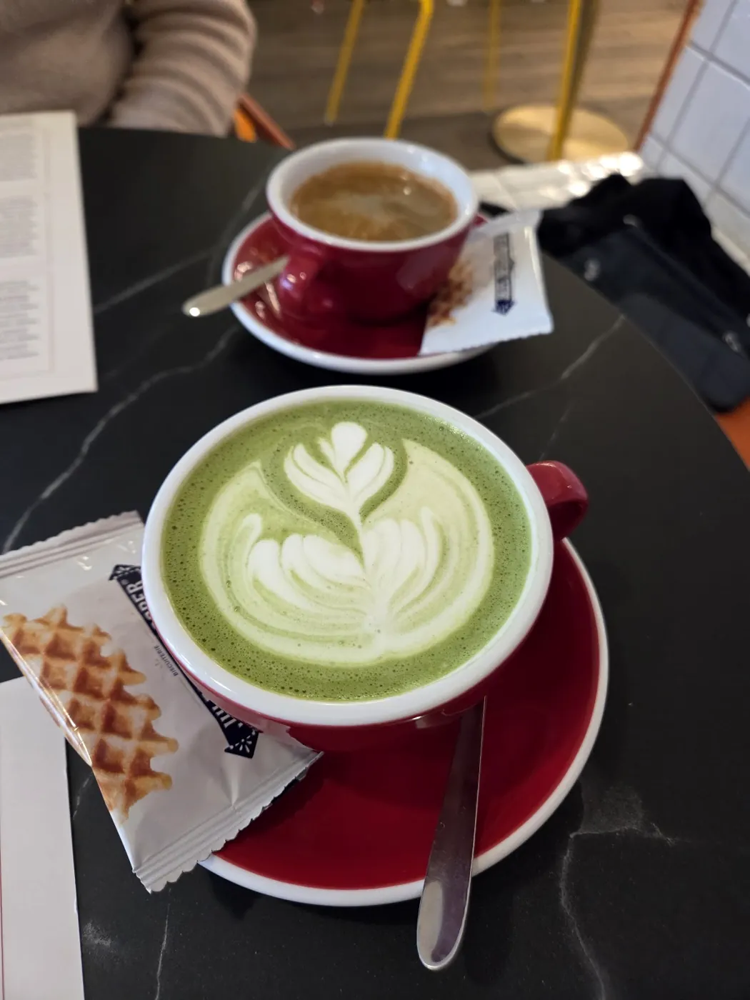
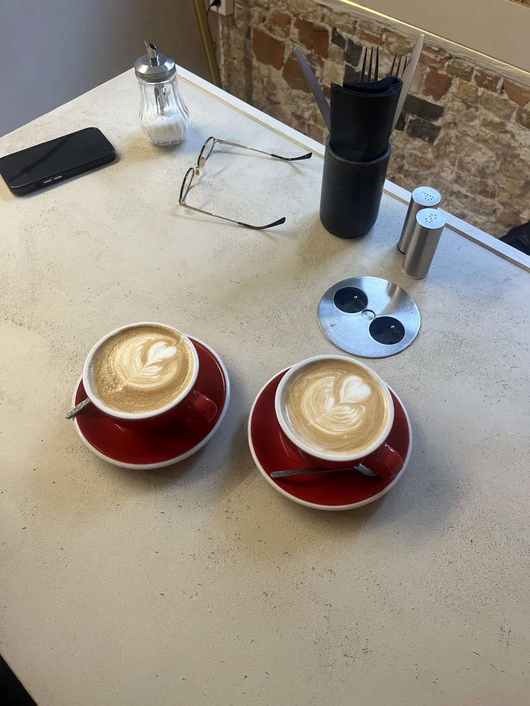
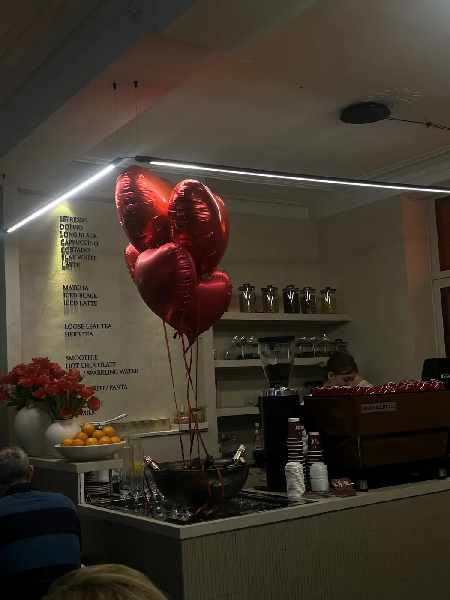
Achter de rode deur in de Cordoeaniersstraat, op een halve minuut wandelen van de Markt. Wie ons vindt, komt meestal terug.
Rond de feestdagen hangt de gevel vol kerstgroen en strikken. De rest van het jaar zie je ons aan de gele stoeltjes op de stoep.
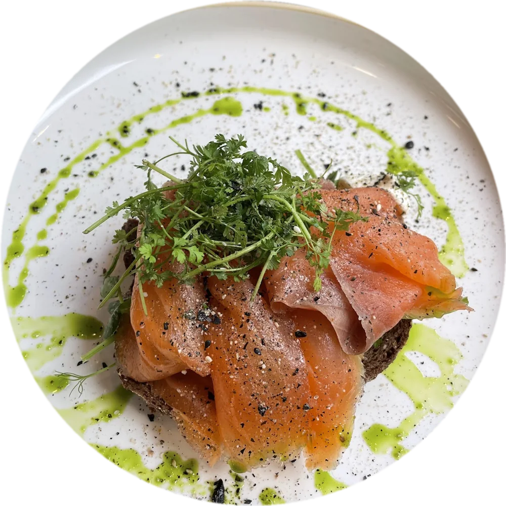
Gemiddelde score uit 2.716 Google-reviews. Daar zijn we elke dag een beetje trots op.
Uit de reviews op Google, met het aantal keer dat ze vallen.
"Excellent breakfast spot in Bruges! I had the shakshuka, it was fresh, flavorful, and perfectly prepared."Google-review
"Not many places serving a cooked breakfast (eggs & bacon) in Brugge without the need to book!"Tripadvisor-review
In de buurt van de Burg en de Markt, in een zijstraat waar het rustiger is dan je zou denken.
Ik maakte deze demo voor jullie om te tonen wat er kan. Na een kort gesprek maak ik er iets veel persoonlijkers van, helemaal naar jullie wens.
Vrijblijvend. Ik kom langs of we bellen.
Op maat, op jullie eigen domein.
Geen voorschot. Jullie betalen pas als alles klaar is.
Hosting, domeinnaam en kleine wijzigingen, zoals nieuwe openingsuren.
Omdat een voorbeeld meer zegt dan een mail. Zo zien jullie meteen wat er kan, en het kost jullie niets.
Nee. Het gesprek is vrijblijvend. Vinden jullie het niks, dan is het daarmee gedaan.
Na ons gesprek staat jullie site binnen 10 tot 14 dagen online.
Zeker. Jullie domeinnaam kan gewoon blijven, de nieuwe site komt in de plaats van de oude.
Nee, dat doe ik op basis van ons gesprek. Eigen foto's zijn mooi meegenomen, maar niet nodig om te starten.